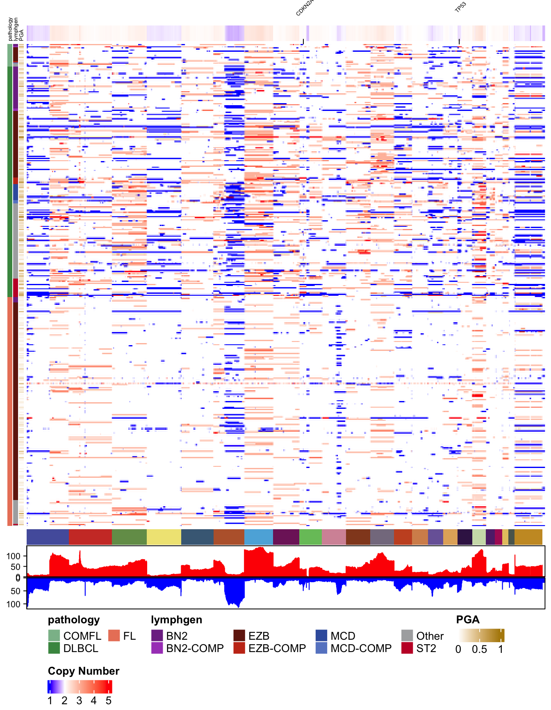

# Load packages
library(GAMBLR.open)
suppressMessages(library(dplyr))Visualizing copy number data as heatmaps
There is a wealth of copy number data bundled within GAMBLR.data in the form of segmented copy number profiles. This tutorial will give you an overview of this data. It will also demonstrate how to process segmented data into a set of bins such that the data can be represented as a matrix of CN values or log ratios.
Prepare setup
We will first import the necessary packages:
Metadata
As usual, we typically begin an analysis by loading the metadata and restricting the rows to samples of interest based on any number of criteria. Here, we’ll separately look at the data from WGS (genome seq_type) and whole exome sequencing capture seq_type.
dlbcl_genome_meta = suppressMessages(get_gambl_metadata(seq_type_filter = "genome")) %>%
filter(pathology=="DLBCL")
dlbcl_exome_meta = suppressMessages(get_gambl_metadata(seq_type_filter = "capture")) %>%
filter(pathology=="DLBCL")
#remove any duplicate sample_id/seq_type combinations
g_meta_clean = check_and_clean_metadata(dlbcl_genome_meta,
duplicate_action = "keep_first")
#remove any duplicate sample_id/seq_type combinations
e_meta_clean = check_and_clean_metadata(dlbcl_exome_meta,
duplicate_action = "keep_first")
nrow(g_meta_clean)[1] 529
nrow(e_meta_clean)[1] 1783This shows that we have data from 529 genomes and 1783 exomes just from DLBCLs.
Projections
The number of samples that have copy number results available isn’t necessarily going to match this. Importantly, some studies are older and relied on the grch37 (i.e. hg19) genome build whereas other studies used some flavour of hg38. In GAMBL, we aim to project all results to both grch37 and hg38 so results are relatively comparable between studies. However, for efficiency, GAMBLR.data doesn’t have both projections for every data set (sorry!). Let’s start by determining which of our samples in the metadata have data available for in case there are some results only available for one or the other projection.
g_segments_grch37 = get_cn_segments(these = g_meta_clean,
projection = 'grch37')
g_segments_hg38 = get_cn_segments(these = g_meta_clean,
projection = 'hg38')
length(unique(g_segments_grch37$ID))[1] 214[1] 48We seem to only have copy number segments available from 48 samples for hg38. For grch37 we have data from 214 samples. How about the exome data?
e_segments_grch37 = get_cn_segments(these = e_meta_clean,
projection = 'grch37')
e_segments_hg38 = get_cn_segments(these = e_meta_clean,
projection = 'hg38')
length(unique(e_segments_grch37$ID))[1] 0[1] 0Ouch! We only provided copy number data from genome samples (so far). Let’s proceed with the largest data set, which is the genome samples and grch37 projection.
From segments to bins
Segmented copy number data can be difficult to work with for a variety of reasons. For any coordinate in the genome, it’s unnecessarily complicated to determine the copy number of all samples. We simplify this by breaking the genome into a series of bins and determining the copy number state of each bin across all samples. This yields a N by M matrix where N is the number of samples with copy number data and M is the number of bins. The segmented_data_to_cn_matrix function in GAMBLR.utils makes this easy. In this example, we’ll do this to our 214 using 2500 bins. I’ve provided the metadata here even though it’s not strictly necessary. This can be useful if you pass seg_data that contains rows from patients that you don’t plan to analyze. Those rows will be removed before the slow process begins.
time_start = Sys.time();
dlbcl_cn_binned = segmented_data_to_cn_matrix(
seg_data = g_segments_grch37,
strategy="auto_split",
n_bins_split=2500,
these_samples_metadata = g_meta_clean)
time_end = Sys.time();
elapsed = round(time_end - time_start)
print(elapsed)Time difference of 18 secsThat took 18 to finish. As you might imagine, increasing the n_bins_split value will make this process slower but will increase the resolution of your analysis.
every_seg = get_cn_segments(get_gambl_metadata())
length(unique(every_seg$ID))[1] 448
time_start = Sys.time();
all_cn_binned = segmented_data_to_cn_matrix(
seg_data = every_seg,
strategy="auto_split",
n_bins_split=2500) #no metadata provided
time_end = Sys.time();
elapsed = round(time_end - time_start)
print(elapsed)Time difference of 25 secsAs you can see, the process took considerably longer this time because of the additional samples that weren’t dropped.
As you might have guessed from the strategy parameter, there are other strategies for converting segmented data into a copy number matrix that don’t rely on equal-sized bins. The other options are ‘custom_regions’,‘cytobands’ and ‘GISTIC’. Each of these will be covered in another tutorial. You can find out more about these in the segmented_data_to_cn_matrix documentation.
DLBCL Copy Number Heatmap
Let’s start with the most basic example. Using the copy number matrix we just created, we run pretty_CN_heatmap. As for most other functions, you have to provide your metadata table via these_samples_metadata. You can often unambiguously refer to this parameter with the word these.
# Generate a basic genome-wide CN heatmap
pretty_CN_heatmap(cn_state_matrix=dlbcl_cn_binned,
these_samples_metadata = g_meta_clean,
hide_annotations = "chromosome")
Copy Number Heatmap for everything
In an earlier example, we generated a larger matrix from all the grch37 copy number data in GAMBLR.data. There are nrow(all_cn_binned) samples in there. Let’s see what that looks like in a heatmap. This time, we’ll tell the function to scale the copy number values to the average ploidy of each sample using scale_by_sample.
all_genome_meta = get_gambl_metadata()
all_genome_meta = check_and_clean_metadata(all_genome_meta,
duplicate_action = "keep_first")
#drop any genomes that don't have copy number data
all_genome_meta = dplyr::filter(all_genome_meta,
sample_id %in% rownames(all_cn_binned))
# Generate a genome-wide CN heatmap without clustering
# Instead, we'll order samples based on pathology and lymphgen
pretty_CN_heatmap(cn_state_matrix=all_cn_binned,
these_samples_metadata = all_genome_meta,
scale_by_sample = TRUE,
cluster_rows=F,
metadataColumns = c("pathology","lymphgen"),
sortByMetadataColumns = c("pathology","lymphgen"),
bin_label_nudge = 1.08,
labelTheseGenes = c("CDKN2A","TP53"),
hide_annotations = "chromosome")